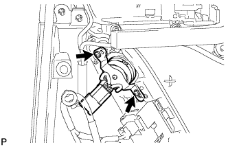

ДИНАМИК ЗАДНЕЙ ДВЕРИ > СНЯТИЕ |
| 1. ОТСОЕДИНИТЕ ПРОВОД ОТ ОТРИЦАТЕЛЬНОГО ВЫВОДА АККУМУЛЯТОРНОЙ БАТАРЕИ |
| 2. СНИМИТЕ ДЕРЖАТЕЛЬ ВНУТРЕННЕЙ РУЧКИ ЛЕВОЙ ДВЕРИ № 2 |
 |
С помощью съемника молдингов A освободите 3 захвата и снимите оправу внутренней ручки задней двери, как показано на рисунке.
| 3. СНИМИТЕ ЛЕВУЮ НАКЛАДКУ ВЕРХНЕГО ПОРУЧНЯ |
 |
С помощью съемника молдингов А освободите 8 захватов и снимите крышку верхнего поручня.
| 4. СНИМИТЕ ПАНЕЛЬ ОБЛИЦОВКИ ЗАДНЕЙ ДВЕРИ В СБОРЕ |
 |
Выверните 3 винта.
С помощью съемника фиксаторов расцепите 9 фиксаторов.
 |
Вытяните панель облицовки задней двери в сборе в направлении, указанном стрелкой на рисунке.
Поднимите панель облицовки задней двери в сборе, чтобы освободить 4 захвата, и снимите панель облицовки задней двери вместе с внутренним уплотнителем стекла задней двери.
 |
Отсоедините трос дистанционного управления замком задней двери в сборе и внутренний трос замка задней двери в сборе.
 |
Отсоедините все разъемы.
| *A | Для моделей с 14 динамиками |
| *B | Для моделей с 9 динамиками |
 |
С помощью отвертки освободите захват и снимите зажим.
| 5. СНИМИТЕ ВНУТРЕННИЙ УПЛОТНИТЕЛЬ СТЕКЛА ЛЕВОЙ ЗАДНЕЙ ДВЕРИ |
 |
С помощью отвертки освободите 3 захвата и снимите внутренний уплотнитель стекла задней двери с панели облицовки задней двери в сборе, как показано на рисунке.
| 6. СНИМИТЕ ЗАДНИЙ ДИНАМИК |
 |
Отсоедините разъем.
Выверните 3 винта.
Освободите 2 захвата и снимите задний динамик.
| 7. СНИМИТЕ ЗАДНИЙ ДИНАМИК № 2 В СБОРЕ (для моделей с 14 динамиками) |
|  |
Выверните 2 винта и снимите задний динамик № 2.